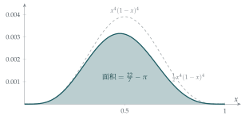

STEP I 1997，第 6 题
继续之前，请先阅读题目（原题为英文）。题目载于 STEP Support Programme 的题目资料库： step.maths.org/questions/97-s1-q6
引子
一代又一代的学生都听过 \(\pi\)“大约是 \(\frac{22}{7}\)”这个说法。这是一个非常好的近似值（approximation）：\(\frac{22}{7} = 3.142857\ldots\)，而 \(\pi = 3.141592\ldots\)。但 \(\frac{22}{7}\) 究竟是偏大还是偏小？你又能否证明这一点，而不是单靠查阅 \(\pi\) 的各位数字？那些数字毕竟是要别人先计算出来的。
这道题给出了整个数学之中最优雅的证明之一。只需一个正函数的积分（integral），其值因而必定为正，而它竟然恰好等于 \(\frac{22}{7} - \pi\)。被积函数（integrand）为正，积分便为正，所以 \(\frac{22}{7} > \pi\)。整个证明只需寥寥数行，而且精巧得被人当作谜题印在数学 T 恤上。
动笔之前
为甚么 \(\int_0^1 \frac{\text{多项式}}{1+x^2}\,\mathrm{d}x\) 会算出 \(\pi\) 来？这种形式的积分之中，哪一个简单的积分本身就给出 \(\pi\)？
\(\int_0^1 \frac{\mathrm{d}x}{1+x^2} = \arctan 1 = \frac\pi4\)。把一个多项式（polynomial）除以 \(1 + x^2\)，会得到一个多项式商式（quotient）（其积分是一个有理数），再加上一个常数余式（remainder）除以 \(1 + x^2\)（其积分是 \(\pi\) 的有理数倍）。题目的第一部分正是要你做这个除法。
逐步解题
阶段 1 多项式除法
先展开：\((1 - x)^4 = 1 - 4x + 6x^2 - 4x^3 + x^4\)，所以 \[x^4(1-x)^4 = x^8 - 4x^7 + 6x^6 - 4x^5 + x^4.\]
把它除以 \(x^2 + 1\)，可以用长除法（long division），也可以用比较系数（comparing coefficients）的方法。余式是甚么？
在 \((a_6x^6 + \cdots + a_0)(x^2 + 1) + b\) 中由最高次项开始比较系数：\(a_6 = 1\)；\(a_5 = -4\)；\(a_4 + a_6 = 6\)，所以 \(a_4 = 5\)；\(a_3 + a_5 = -4\)，所以 \(a_3 = 0\)；\(a_2 + a_4 = 1\)，所以 \(a_2 = -4\)；\(a_1 + a_3 = 0\)，所以 \(a_1 = 0\)；\(a_0 + a_2 = 0\)，所以 \(a_0 = 4\)；最后 \(a_1 = 0\)（\(x\) 的系数）及 \(a_0 + b = 0\)，所以 \(b = -4\)。即是说， \[x^4(1-x)^4 = (x^6 - 4x^5 + 5x^4 - 4x^2 + 4)(x^2 + 1) - 4.\]
阶段 2 计算积分
除以 \(1 + x^2\)，得 \[\frac{x^4(1-x)^4}{1+x^2} = x^6 - 4x^5 + 5x^4 - 4x^2 + 4 - \frac{4}{1+x^2},\] 所以 \[\int_0^1 \frac{x^4(1-x)^4}{1+x^2}\,\mathrm{d}x = \frac17 - \frac46 + \frac55 - \frac43 + 4 - 4\cdot\frac\pi4 = \frac17 - \frac23 + 1 - \frac43 + 4 - \pi.\] 由于 \(-\frac23 - \frac43 = -2\)，有理数部分是 \(\frac17 + 3 = \frac{22}{7}\)，因此积分等于 \(\frac{22}{7} - \pi\)。■
阶段 3 估计积分的界
被积函数在 \((0, 1)\) 上为正，所以立即得到 \(\frac{22}{7} > \pi\)。要得到 \(\pi\) 的下界（lower bound），我们需要这个积分的上界（upper bound）。\(\frac{1}{1+x^2}\) 在 \([0, 1]\) 上最大可以有多大？
在 \([0, 1]\) 上，\(1 \leq 1 + x^2 \leq 2\)，所以 \[\tfrac12 x^4(1-x)^4 \leq \frac{x^4(1-x)^4}{1+x^2} \leq x^4(1-x)^4,\] 而且除了在端点之外，不等式（inequality）都是严格成立的。
计算 \(\int_0^1 x^4(1-x)^4\,\mathrm{d}x\)，然后完成证明。
把展开式逐项积分， \[\int_0^1 x^4(1-x)^4\,\mathrm{d}x = \frac19 - \frac48 + \frac67 - \frac46 + \frac15 = \frac{1}{630}.\] （以 \(2520\) 为公分母：\(280 - 1260 + 2160 - 1680 + 504 = 4\)，而 \(\frac{4}{2520} = \frac{1}{630}\)。）所以 \[0 < \frac{22}{7} - \pi < \frac{1}{630},\] 亦即 \(\frac{22}{7} > \pi > \frac{22}{7} - \frac{1}{630}\)。■
以数值计算，\(\frac{22}{7} - \frac{1}{630} = 3.14127\ldots\)，所以我们已证明 \(3.1412 < \pi < 3.1429\)。若同时用上左边的不等式，便有 \(\frac{1}{1260} < \frac{22}{7} - \pi\)，这把上界改进为 \(\pi < 3.14207\)。

回顾
以正值证明不等式。正函数的积分为正。一旦认出积分等于 \(\frac{22}{7} - \pi\)，不等式便立即成立。
被积函数愈小，界愈精确。因子 \(x^4(1-x)^4\) 在 \([0, 1]\) 上极小（最多只有 \(\frac{1}{256}\)），这使积分很小，所得的界也就很精确。
有理数加上 \(\pi\) 的倍数。正如 第 2.9 节 所见，一个形如“有理数 \(+\) 某常数的有理数倍”的积分，若其值很小，便给出该常数的一个良好有理近似值。
背后的数学
阿基米德（Archimedes）约于公元前 250 年证明了 \(\frac{223}{71} < \pi < \frac{22}{7}\)，方法是计算圆内接和圆外切正 \(96\) 边形的周界（可与 第 2.5 节 中的多边形比较）。积分证明则晚近得多。它由 D. P. Dalzell 于 1944 年发表，其后在 1968 年被选为美国大学本科生普特南数学竞赛（Putnam competition）的题目，因而广为人知。它的迷人之处在于完全不需要任何数值计算：不等式 \(\frac{22}{7} > \pi\) 直接来自“正函数的积分为正”这个事实。
用同一思路得出更佳的近似值
这个方法可以推广。以 \(x^8(1-x)^8\) 取代 \(x^4(1-x)^4\)，同样的除法给出 \[\int_0^1 \frac{x^8(1-x)^8}{1+x^2}\,\mathrm{d}x = 4\pi - \frac{188684}{15015},\] 由此证明 \(\pi > \frac{47171}{15015} = 3.1415917\ldots\)，准确至六位有效数字（significant figures）。2009 年，Stephen Lucas 找到了多族这类被积函数非负的积分，它们能证明关于其他著名近似值的不等式，其中包括准确至七位有效数字的 \(\frac{355}{113}\)。
近似值与无理性
为甚么 \(\pi\) 会有 \(\frac{22}{7}\) 和 \(\frac{355}{113}\) 这样好的分数近似值？每个无理数（irrational number）都有无穷多个分数 \(\frac pq\) 与它相距不超过 \(\frac{1}{q^2}\)，而 \(\pi\) 碰巧在很早的阶段就有几个特别好的，因为它的连分数（continued fraction）\([3; 7, 15, 1, 292, \ldots]\) 含有 \(292\) 这个很大的项（见 第 2.2 节）。像本题这样的积分，若令其愈来愈小，便是另一类证明的起点：这类证明指出某些数不可能被分数逼近得太好，因而是无理数。Ivan Niven 那个著名的、只有一页的 \(\pi\) 是无理数的证明（1947 年），用的就是 \(\frac{x^n(1-x)^n}{n!}\sin(\pi x)\) 的积分，它们是 第 2.9 节 中那些积分的三角函数近亲。
思维技巧
要证明 \(A > B\)，可找一个积分等于 \(A - B\) 的正函数。
这样便把一个不等式化为一个恒等式（identity）再加上一个显然的事实。这是分析学（analysis）中最有用的技巧之一；同一思路，以平方和取代积分，就在 第 3.2 节 中证明了算术平均—几何平均不等式（AM–GM）。
延伸练习
核对数字。计算 \(\frac{22}{7} - \pi\) 至四位有效数字，并确认它介乎 \(\frac{1}{1260}\) 与 \(\frac{1}{630}\) 之间。
一个 Beta 积分。利用公式 \(\int_0^1 x^n(1-x)^n\,\mathrm{d}x = \frac{(n!)^2}{(2n+1)!}\)（在 第 4.4 节 中证明）验证 \(\int_0^1 x^4(1-x)^4\,\mathrm{d}x = \frac{1}{630}\)。
一个偏小的近似值。证明 \[\int_0^1 \frac{x(1-x)^2}{1+x^2}\,\mathrm{d}x = \frac\pi2 - \frac32 \quad\text{及}\quad \int_0^1 \frac{x^2(1-x)^4}{1+x^2}\,\mathrm{d}x = \pi - \frac{47}{15},\] 并由此推出 \(\pi > 3\) 及 \(\pi > \frac{47}{15}\)。为甚么这些近似值不及 \(\frac{22}{7}\) 准确？
更进一步。 较难 验证上文给出的 \(\int_0^1 \frac{x^8(1-x)^8}{1+x^2}\,\mathrm{d}x\) 的恒等式。（除法可以交给电脑代数系统去做；重点是看出余式是 \(16\)，从而得出 \(4\pi\)。）
延伸阅读
Petr Beckmann, A History of \(\pi\)（St Martin’s Press）。详细讲述阿基米德的多边形方法，另有许多其他内容。
Stephen Lucas, “Approximations to \(\pi\) derived from integrals with nonnegative integrands”, American Mathematical Monthly 116 (2009)。篇幅短小，容易阅读。
Ivan Niven, Irrational Numbers（Mathematical Association of America）。收录了 Niven 对 \(\pi\) 是无理数的证明。